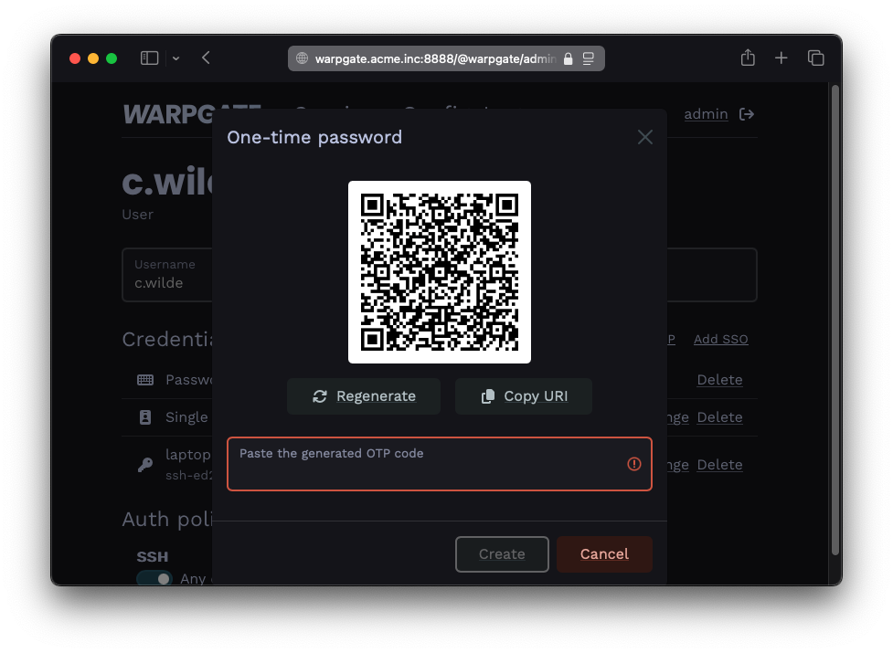
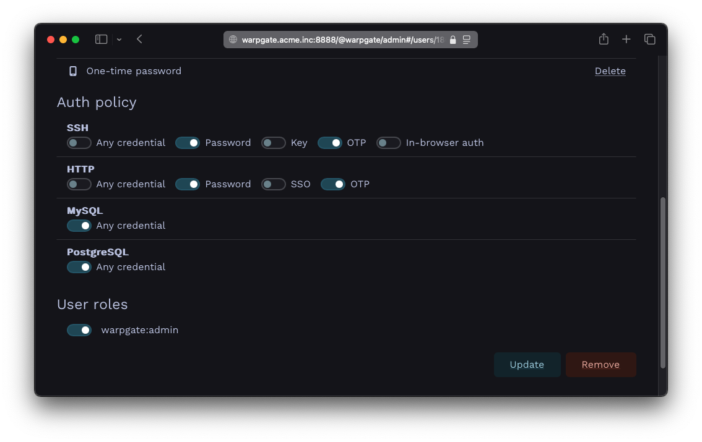

One-time passwords (OTP)§
Configuration§
Log into the Warpgate admin UI and navigate to Config > Users > admin and click Add OTP:

Adding an OTP credential
The QR code shown can now be used to set up a mobile TOTP authenticator app.
Once done, click Update configuration to save.
Credentials policy configuration for SSH & HTTP§
To specify 2FA policies for SSH or HTTP sessions, uncheck Any credential in the corresponding Auth policy section and select all required credentials:

Authentication policy with OTP